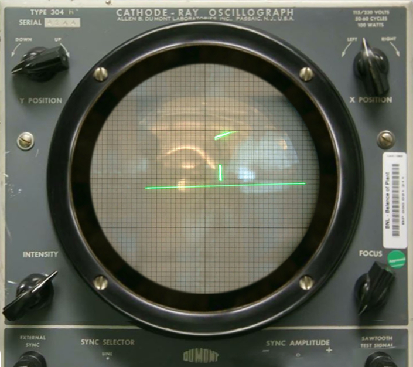

- 1.Tennis for two
- Tennis for Two is a game developed by William Higinbotham in 1958, in which two players play a simple tennis simulation, displayed on an oscilloscope screen. Players hit the ball with the help of a button and try to throw the ball into the opponent's court. The game was made using an analog computer and oscilloscope rather than a computer, and is an early example of video games.
- 2.Space War
- Spacewar! (1962) is considered one of the first video games in computer history. It was developed on the PDP-1 computer by Steve Russell and several other programmers at MIT. The game is a simple space combat simulation in which two players control spaceships and try to win by shooting at each other. The gravitational force of a star is also included in the playing field, which affects the movement of ships. Spacewar! holds an important place as one of the first interactive and multiplayer games in the history of computer games.
- 3.Computer Space
- Computer Space (1971) is known as the first commercially produced video game, developed by Nolan Bushnell and Ted Dabney, the founders of Atari. In the game, the player controls a spaceship and battles enemy ships on the screen. The objective is to shoot and destroy enemy ships to score points, trying to outscore them within a given time limit.
- 4.Galaxy Game
- Galaxy Game (1971) is one of the earliest coin-operated arcade video games, created by Bill Pitts and Hugh Tuck. It was a clone of the earlier game Spacewar! and was installed at Stanford University. The game featured two players controlling spaceships in a dogfight while navigating around a central star that exerted gravitational pull. Players could fire missiles and use limited fuel for their ship's thrusters.
- 5.Pong
- Pong, released in 1972 by Atari, is one of the most iconic arcade games in video game history. It simulates a game of table tennis where two players control paddles. Players move their paddles up and down to hit a ball back and forth, trying to score points by getting the ball past their opponent's paddle. The game features simple 2D graphics, with a rectangular paddle on either side of the screen and a moving dot representing the ball. Pong became a major commercial success, revolutionizing the arcade gaming industry and inspiring many subsequent games. It is recognized as one of the first games to significantly increase the popularity of video gaming.
- 6.Space Race
- Space Race is an arcade game developed by Atari in 1973. In this game, two players control spaceships and compete against each other in a racing simulation. Players navigate through the screen, avoiding asteroids and other obstacles while trying to reach the target as quickly as possible. The game features simple graphics, allowing players to move their spaceships up, down, left, and right. Space Race promotes competition among friends by offering a multiplayer experience and holds an important place in the history of video games.
- 7.Gran Trak 10
- Gran Trak 10 is a racing arcade game released by Atari in 1974. It is one of the first games to feature a top-down view of a racetrack, allowing players to control a car as they navigate through a series of curves and obstacles. Players race against the clock to achieve the fastest lap times while avoiding collisions with barriers. The game uses a simple steering wheel and pedal controls, simulating the experience of driving a real car. Gran Trak 10 is notable for introducing innovative features such as a rudimentary scoring system and a track layout that changed with each game, making it a significant milestone in the evolution of racing games.
- 8.Tank
- Tank is a two-player arcade game released by Atari in 1974. In this game, players control tanks and engage in combat against each other in a maze-like arena. The objective is to shoot the opponent's tank while avoiding their shots and navigating around obstacles. Players use a joystick to maneuver their tanks and fire shells at their opponent. The game features simple graphics with a top-down view and incorporates a scoring system that awards points for hits. Tank is significant for being one of the first multiplayer games and laid the groundwork for future competitive video games, emphasizing player versus player combat.
- 9.Gun Fight
- Gun Fight is an arcade game released by Midway in 1975, notable for being one of the first multiplayer video games. In this game, players assume the roles of cowboys in a Western setting and engage in shootouts. Using a joystick and buttons, players move their characters around a town and attempt to shoot each other while avoiding enemy fire.The game features simple graphics and a top-down view, with obstacles like buildings providing cover. Players score points by successfully hitting their opponent, and the game often involves a limited number of bullets, adding a strategic element to the gameplay. Gun Fight was groundbreaking for its time, introducing the concept of direct competition between players in a video game.
- 10.Tetris
- Tetris is a puzzle video game created by Russian software engineer Alexey Pajitnov, released in 1984. The game involves rotating and positioning falling geometric shapes called "Tetriminos" to create complete horizontal lines on the playing field. When a line is completed, it disappears, and the player earns points. The game continues to speed up as the player progresses, increasing the challenge.Tetris is known for its simple yet addictive gameplay, which has made it one of the most popular and influential video games of all time. It has been released on numerous platforms and has inspired countless sequels and variations, establishing itself as a classic in gaming history.
